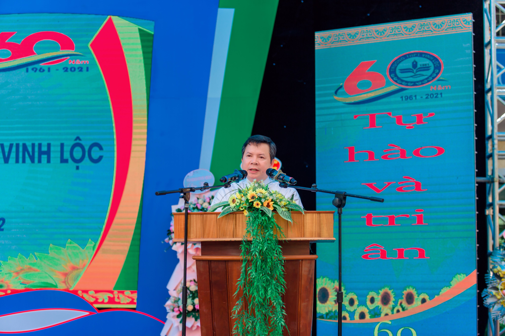
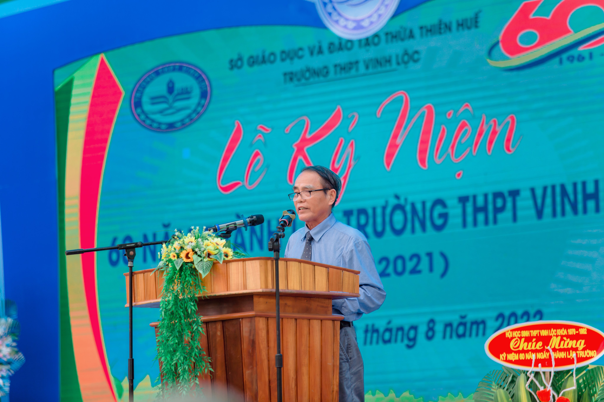
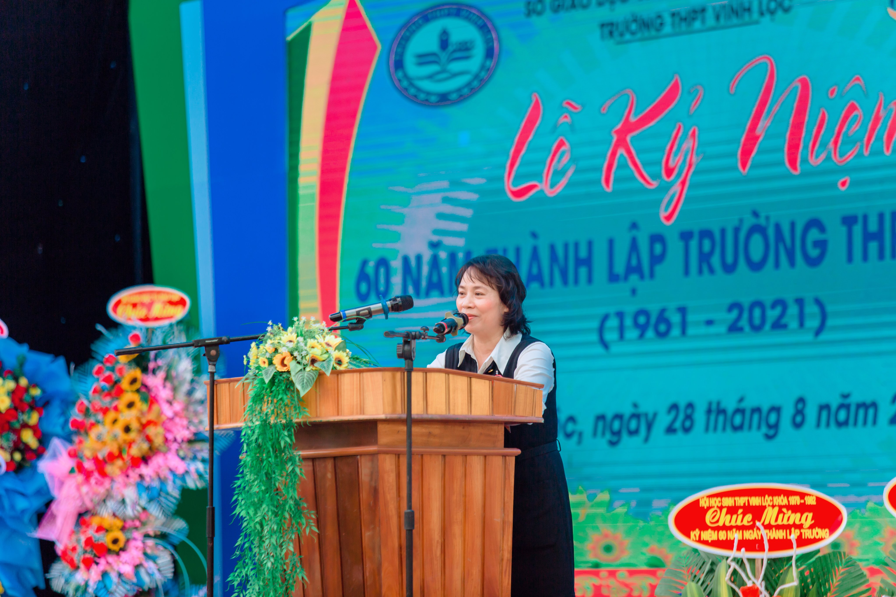
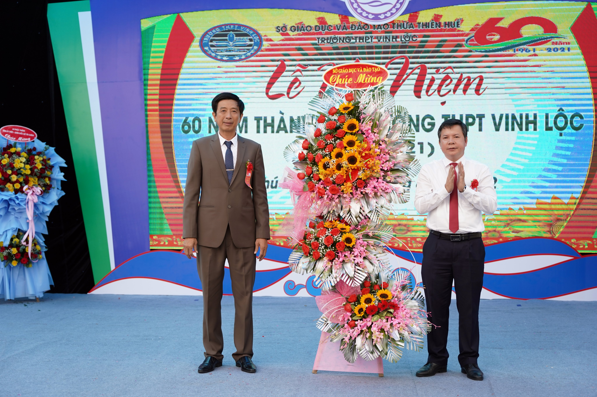
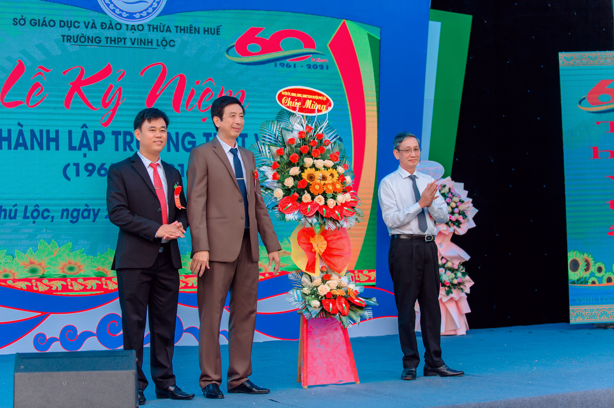
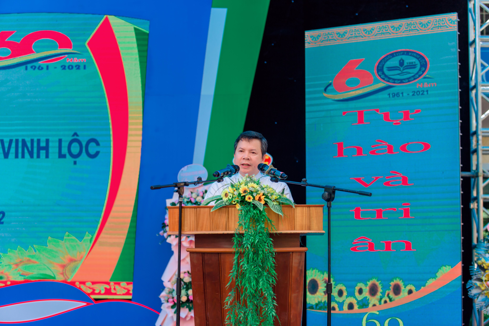
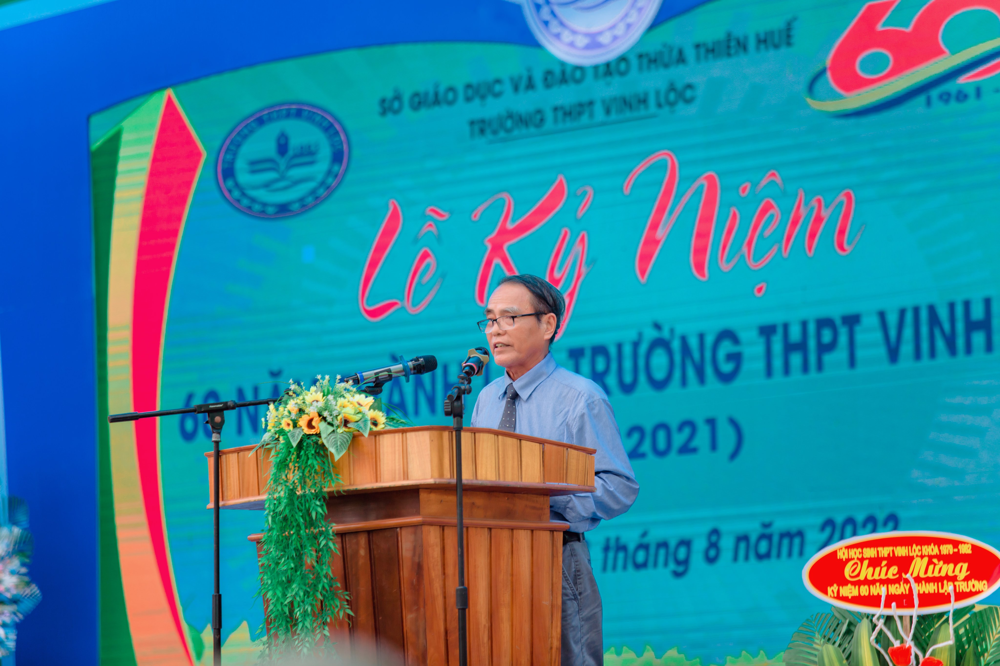
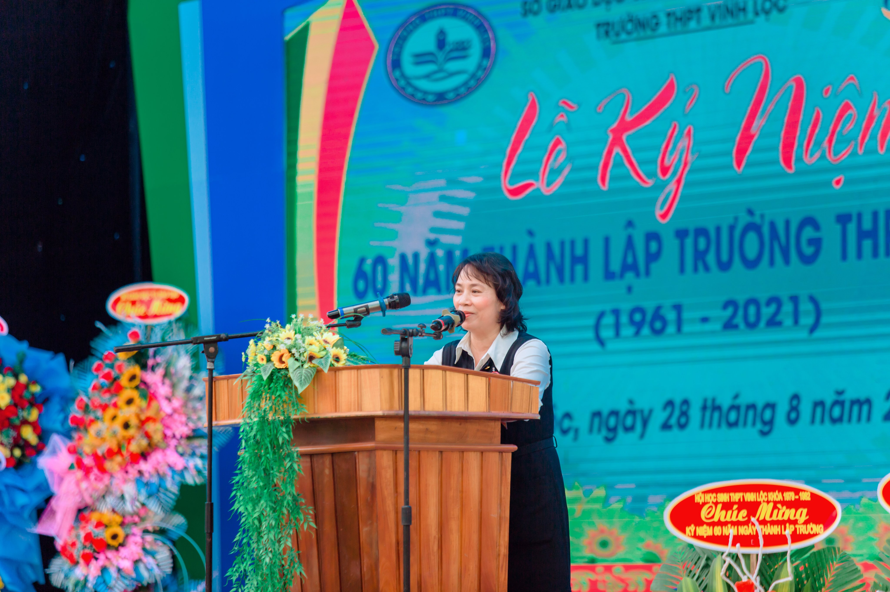
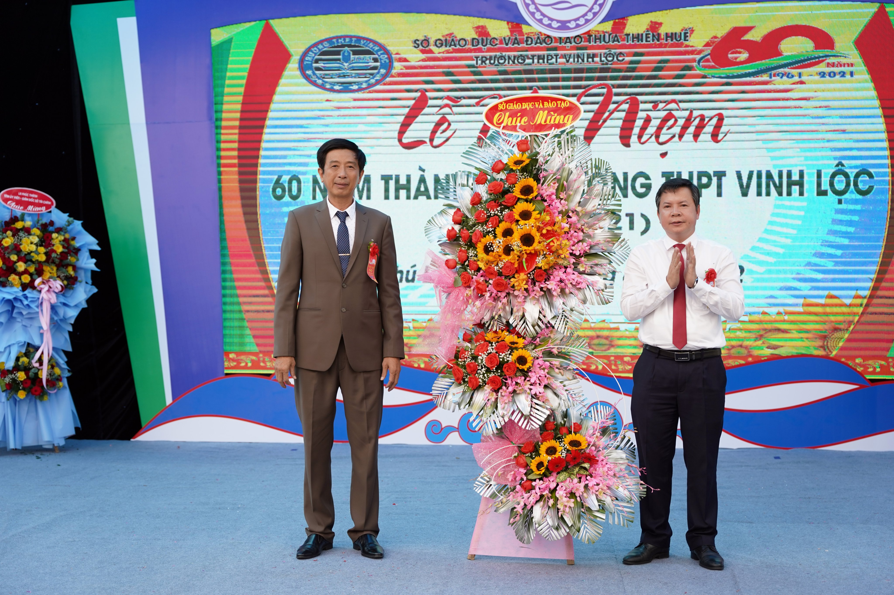
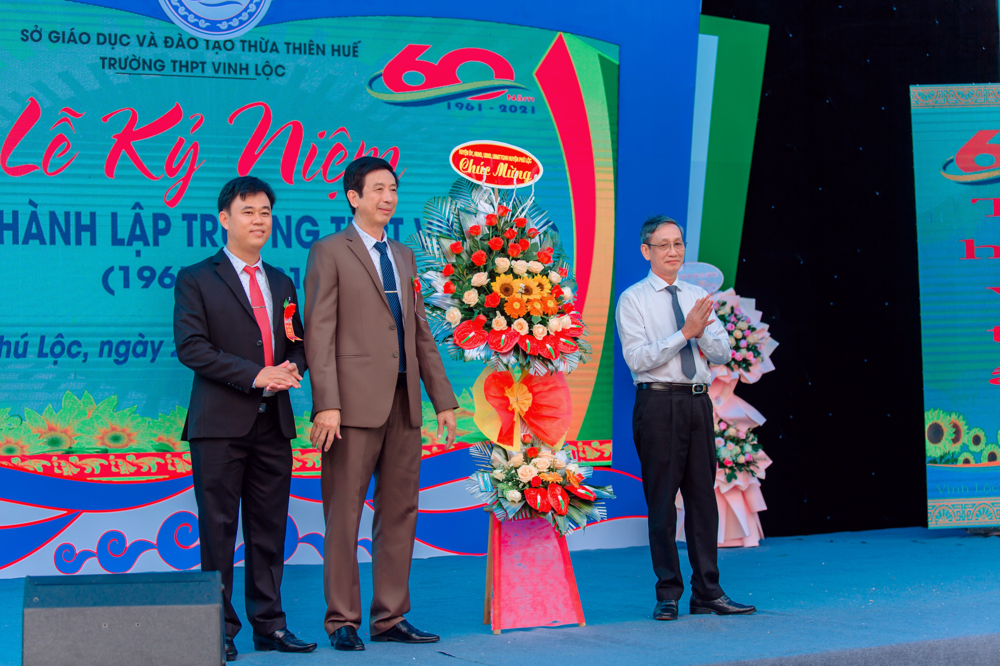

Trường THPT Vinh Lộc được thành lập năm 1961, đến năm 2021 đã tròn 60 năm hình thành và phát triển. Để ôn lại những truyền thống quý báu cũng như tôn vinh những thành tích đáng tự hào của nhà trường, đồng thời ghi nhận, tri ân những đóng góp của các thế hệ cán bộ quản lý, nhà giáo, học sinh cho sự phát triển của nhà trường, Trường THPT Vinh Lộc đã tổ chức lễ Kỷ niệm 60 năm thành lập trường vào hai ngày 27,28/8/2022.
Tham dự Lễ Kỷ niệm, về phía Sở Giáo dục và Đào tạo Thừa Thiên Huế, nhà trường vinh dự được đón tiếp thầy giáo Nguyễn Tân - Giám đốc Sở cùng quý thầy trong Ban Giám đốc, quý thầy cô đại diện lãnh đạo Công đoàn ngành Giáo dục và các Phòng, Ban của Sở. Về phía lãnh đạo huyện Phú Lộc, có sự hiện diện của đồng chí Trần Đức Thành - Phó Bí thư Thường trực Huyện ủy cùng các đồng chí trong Ban Thường Vụ Huyện ủy; đồng chí Nguyễn Hải Đăng, Ủy viên Thường vụ Huyện ủy, Phó Chủ tịch UBND huyên Phú Lộc. Bên cạnh đó, nhà trường còn hân hạnh được đón tiếp đại diện của cơ quan, tổ chức, cá nhân, các thế hệ cán bộ, giáo viên, nhân viên nhà trường qua các thời kỳ, các anh chị cựu học sinh qua nhiều thế hệ đã về dự và chung vui với thầy và trò Trường THPT Vinh Lộc trong Lễ Kỷ niệm.
Phát biểu tại buổi Lễ Kỷ niệm, thầy giáo Nguyễn Văn Tuấn – Hiệu trưởng nhà trường đã ôn lại chặng đường 60 năm hình thành và phát triển của Trường THPT Vinh Lộc. Nhìn lại chặng đường sáu thập kỷ qua, với bao thăng trầm của đời sống xã hội, các thế hệ thầy và trò nhà trường đã cùng nhau vượt qua muôn vàn khó khăn, thử thách để xây dựng và phát triển. Trường THPT Vinh Lộc trở thành nơi gửi gắm tình cảm tâm huyết, trí tuệ và công sức của nhiều thế hệ cán bộ, giáo viên, nhân viên và học sinh. Cũng từ mái trường thân yêu này, lớp lớp thế hệ học sinh đã được chắp cánh ước mơ để vững bước trên con đường lập thân, lập nghiệp, đóng góp trên nhiều lĩnh vực khác nhau của đời sống xã hội, góp phần to lớn vào công cuộc đổi mới và hội nhập của quê hương, đất nước. Sáu mươi năm, một mốc son đáng nhớ để các thế hệ thầy và trò nhà trường ghi nhận, đánh giá và bước tiếp trong sự nghiệp trồng người. Thay mặt nhà trường, thầy giáo Nguyễn Văn Tuấn gửi lời cảm ơn chân thành, sâu sắc đến sự quan tâm của lãnh đạo các cấp ngành, các thế hệ thầy giáo, cô giáo và học sinh của nhà trường luôn đồng hành cùng nhà trường tô thắm cho sáu mươi mùa hoa Vinh Lộc luôn rực rỡ.
Thay mặt lãnh đạo Sở Giáo dục và Đào tạo Thừa Thiên Huế, thầy giáo Nguyễn Tân – Giám đốc Sở đã ghi nhận, biểu dương những thành tích mà nhà trường đã đạt được. Thầy Nguyễn Tân khẳng định, dù Trường THPT Vinh Lộc đóng ở địa bàn còn nhiều khó khăn về đời sống dân cư, song phát huy tinh thần dạy tốt – học tốt, trong những năm qua, nhà trường đã đạt được nhiều thành tích đáng phấn khởi trên nhiều mặt: văn hóa, thể dục thể thao…Thầy động viên tập thể nhà trường tiếp tục phát huy truyền thống hiếu học để phấn đấu hơn nữa ở chặng đường phía trước, đáp ứng yêu cầu đổi mới giáo dục.
Tại buổi Lễ Kỷ niệm, thầy giáo Hồ Văn Xảo - đại diện cựu giáo viên và chị Hoàng Thị Bạch Tuyết – đại diện cựu học sinh cũng có những lời phát biểu đầy xúc động gửi đến các thế hệ thầy cô giáo và học sinh của nhà trường. Từ sự ủng hộ của các cựu học sinh, nhà trường đã trao 10 suất học bổng với tổng số tiền 60 triệu đồng cho các em học tốt vượt khó.
Trước đó, trong ngày 27/8/2022, Trường THPT Vinh Lộc đã tổ chức nhiều hoạt động sôi nổi như: tổ chức gian hàng “Đặc sản quê hương”, Hội diễn văn nghệ…tạo cơ hội giao lưu cho các thế hệ học sinh của nhà trường.
Lễ Kỷ niệm 60 năm thành lập Trường THPT Vinh Lộc (1961-2021) đã diễn ra thành công tốt đẹp. Buổi Kỷ niệm là dịp để thắt chặt tình cảm giữa các thế hệ thầy cô, học sinh của nhà trường. Những nụ cười, những giọt nước mắt sau bao năm xa cách thể hiện tình nghĩa thầy trò, đồng nghiệp, bè bạn – đó luôn là những điều đẹp đẽ dưới mái trường Vinh Lộc thân yêu. Sáu mươi mùa hoa trên vùng sóng cát đã tỏa đi khắp muôn nơi để tô điểm cho đất nước. Thế hệ thầy trò hôm nay tiếp tục khát vọng ươm mầm cho những mùa hoa mới, tươi thắm và rực rỡ hơn.
 








